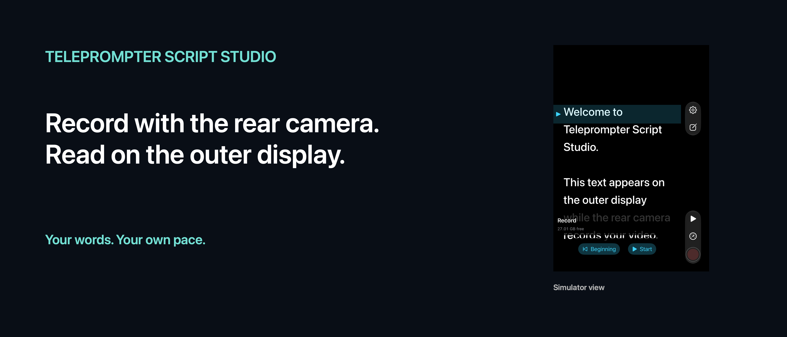

Read beside the lens.
An independent camera and teleprompter app for iPhone Duo.
The camera preview stays inside. A public camera capture scene accessory displays the script outside, beside the rear cameras. Native controls share capture and reading state.
The outer view requires an open iPhone Duo, an active camera session, the app full-screen inside and system accessory availability.

Download header artwork · Download search artwork


Local and focused
Type, paste or import TXT, RTF, DOCX and PDF. Adjust font size, spacing, width and speed. Record with audio and explicitly save videos to Photos. German and English interface. No account, ads, subscription or app backend.